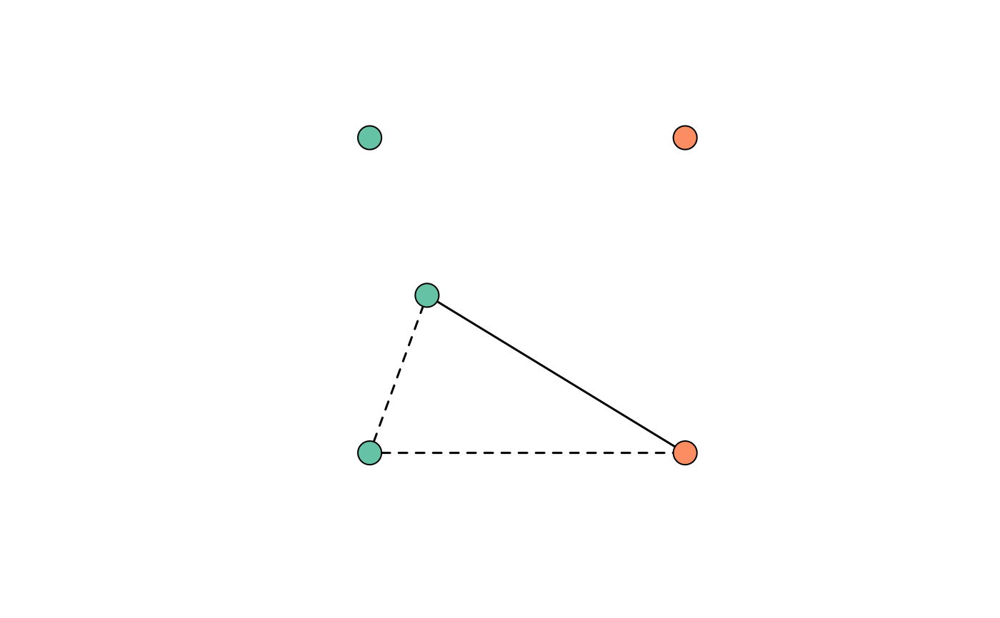

Converts a relationship graph (RG) encoded as a list to an igraph object
Source: R/RG_to_igraph.R
RG_to_igraph.RdConverts an RG encoded as a list to an igraph object, which requires
more memory allocation but can be plotted using plot_RG.
Arguments
- RG
List encoding an RG; see Value of
enumerate_RGswhenigraph = FALSE.- MOIs
Vector of per-episode multiplicities of infection (MOIs), i.e., numbers of per-episode genotypes / vertices; adds to the graph an attribute that is used by
plot_RGto group genotypes / vertices by episode.
Value
A weighted graph whose edge weights 1 and 0.5 encode clonal and sibling relationships, respectively.
Examples
MOIs <- c(3,2)
set.seed(6)
RG_as_list <- sample_RG(MOIs, igraph = FALSE)
RG_as_igraph <- RG_to_igraph(RG_as_list, MOIs)
# RG encoded as a list requires less memory allocation
utils::object.size(RG_as_list)
#> 2512 bytes
utils::object.size(RG_as_igraph)
#> 4568 bytes
# RG encoded as an igraph object can be plotted using plot_RG() and
# manipulated using igraph functions
plot_RG(RG_as_igraph, margin = rep(0,4), vertex.label = NA)

# Edge weights 1 and 0.5 encode clonal and sibling relationships
igraph::E(RG_as_igraph)$weight
#> [1] 0.5 0.5 1.0
# Vertex attribute group encodes episode membership
igraph::V(RG_as_igraph)$group
#> [1] 1 1 1 2 2